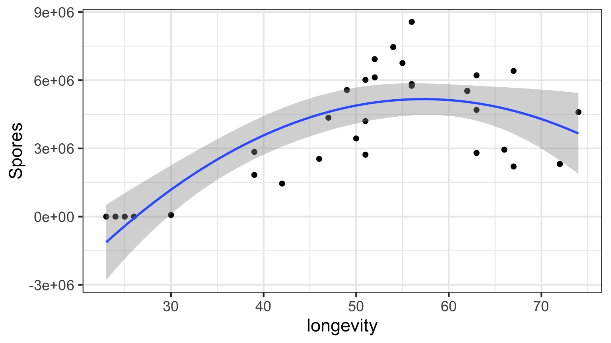
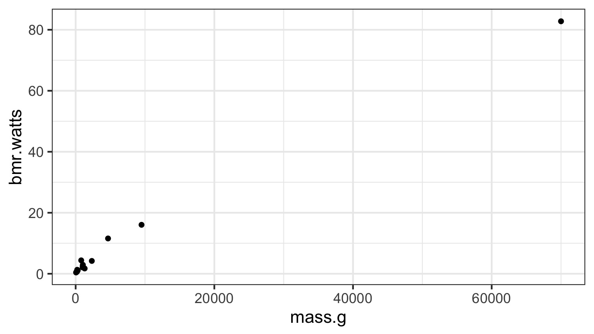
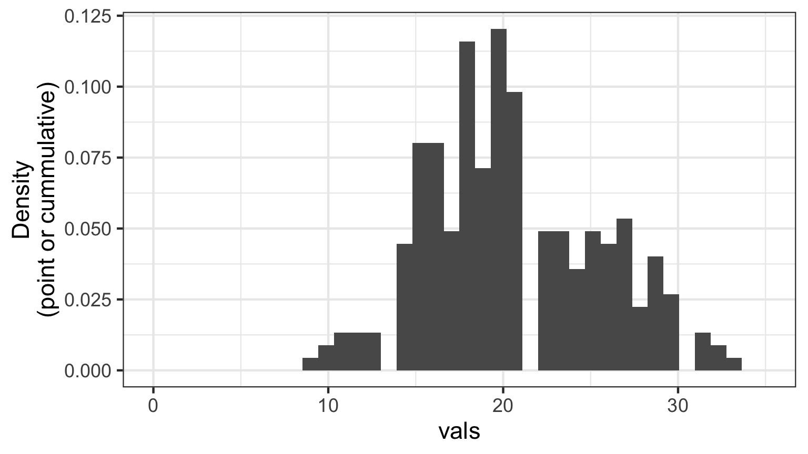
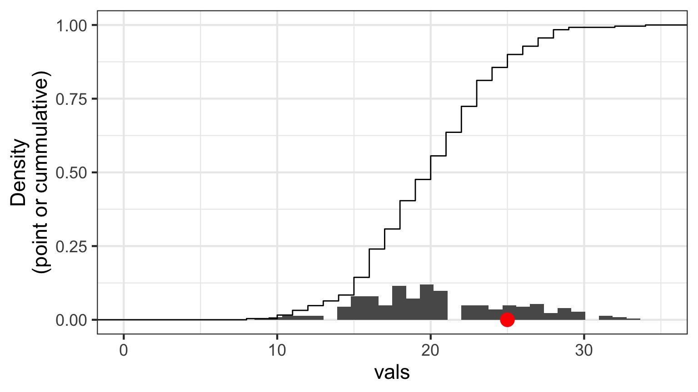
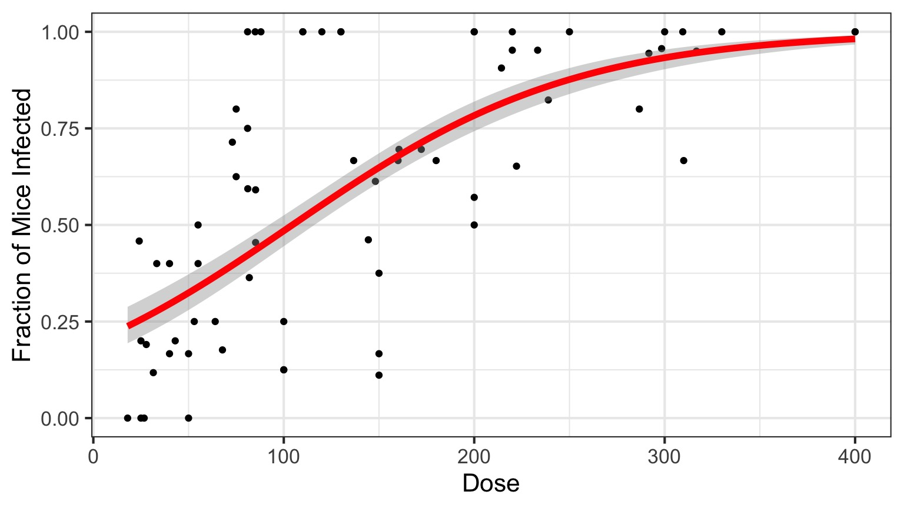

Nonlinear Regression and Genearlized Linear Models
Going the Distance
- Nonlinear Models with Normal Error
- Generalized Linear Models
- Assessing Error Assumptions
- Assessing Error Assumptions
- Poisson Regression
- Logistic Regression
The General Linear Model
\[\Large \boldsymbol{Y} = \boldsymbol{\beta X} + \boldsymbol{\epsilon}\]- We have seen this model can accomodate interaction (products)
- X can also have other nonlinear terms
- The key is that nonlinear terms have coefficients and add up
> - “Linear” data generating process
- ML, Bayes, and Algorithmic Least Squares can all fit these models
Daphnia Parasites

Daphnia Parasites
Does this looks right?

What do you do when you don’t have a line?
- Pray
- If nonlinear terms are additive fit with OLS
- Transform? But think about what it will do to error.
- Nonlinear Least Squares
- Generalized Linear Models
But Model Assessment is Wonky

What is our Data Generating Process?
The General Linear Model
\[\Large \boldsymbol{Y} = \boldsymbol{\beta X} + \boldsymbol{\epsilon}\]
Why not have Spores = Longevity + Longevity2
Those Posthocs are All Right?

Squared?

Going the Distance
- Nonlinear Models with Normal Error
- Generalized Linear Models
- Assessing Error Assumptions
- Assessing Error Assumptions
- Poisson Regression
- Logistic Regression
What if the relationship isn’t additive?

Metabolic Rate = a ∗ massb
Transformations
- log(y): exponential
- log(y) and log(x): power function
- arcsin(sqrt(y)): bounded data
- logit(y): for bounded data (more well behaved)
- Box-Cox Transform
May have to add 0.01, 0.5, or 1 in cases with 0s
You must ask, what do the transformed variables mean?
Log-Log Fit

log(Metabolic Rate) = a + b*log(mass) + error
Careful About Error Structure
log(MetabolicRate) = log(a) + b ∗ log(mass) + error implies
\[Metabolic Rate = a ∗ mass^b ∗ error\]
but we often want
\[Metabolic Rate = a ∗ mass^b + error\]
Many Ways to Fit
primate.nls <- nls(bmr.watts ~ a*mass.g^b,
data=metabolism,
start=list(a = 0.0172858, b = 0.74160))primate.mle <- mle2(bmr.watts ~ dnorm(a*mass.g^b, sigma),
data=metabolism,
start=list(a = 0.0172858, b = 0.74160, sigma=5))
But this may not solve the problem as…
But Not All Error Generating Processes Are Normal

The General Linear Model is a Special Case
\[\Large \boldsymbol{Y} = \boldsymbol{\beta X} + \boldsymbol{\epsilon}\]
Implies that: \[\boldsymbol{\hat{Y}} = \boldsymbol{\beta X}\]
and
\[\boldsymbol{Y} \sim N(\boldsymbol{\hat{Y}})\]
But what if We don’t want a Normal Distribution?
The Generalized Linear Model
\[\boldsymbol{\eta} = \boldsymbol{\beta X}\]
\[f(\boldsymbol{\hat{Y}}) = \boldsymbol{\eta}\]
f(y) is called the link function
\[\boldsymbol{Y} = E(\boldsymbol{\hat{Y}}, \theta)\]
E is any distribution from the Exponential Family
\(\theta\) is an error parameter, and can be a function of Y
Generalized Linear Models: Link Functions
Basic Premise:
- We have a linear predictor, \(\eta_i = a+Bx\)
- That predictor is linked to the fitted value of \(Y_i\), \(\mu_i\)
- We call this a link function, such that \(g(\mu_i) = \eta_i\)
- For example, for a linear function, \(\mu_i = \eta_i\)
- For an exponential function, \(log(\mu_i) = \eta_i\)
- For example, for a linear function, \(\mu_i = \eta_i\)
Some Common Links
Identity: $= $ - e.g. \(\mu = a + bx\)
Log: $log() = $ - e.g. \(\mu = e^{a + bx}\)
Logit: $logit() = $ - e.g. \(\mu = \frac{e^{a + bx}}{1+e^{a + bx}}\)
Inverse: $ = $ - e.g. \(\mu = (a + bx)^{-1}\)
Generalized Linear Models: Error
Basic Premise:
The error distribution is from the exponential family
- e.g., Normal, Poisson, Binomial, and more.
For these distributions, the variance is a funciton of the fitted value on the curve: \(var(Y_i) = \theta V(\mu_i)\)
- For a normal distribution, \(var(\mu_i) = \theta*1\) as \(V(\mu_i)=1\)
- For a poisson distribution, \(var(\mu_i) = 1*\mu_i\) as \(V(\mu_i)=\mu_i\)
- For a normal distribution, \(var(\mu_i) = \theta*1\) as \(V(\mu_i)=1\)
Distributions, Canonical Links, and Dispersion
| Distribution | Canonical Link | Variance Function |
|---|---|---|
| Normal | identity | \(\theta\) |
| Poisson | log | \(\mu\) |
| Quasipoisson | log | \(\mu\theta\) |
| Binomial | logit | \(\mu(1-\mu)\) |
| Quasibinomial | logit | \(\mu(1-\mu)\theta\) |
| Negative Binomial | log | \(\mu + \kappa\mu^2\) |
| Gamma | inverse | \(\mu^2\) |
| Inverse Normal | \(1/\mu^2\) | \(\mu^3\) |
Distributions and Other Links
| Distribution | Links |
|---|---|
| Normal | identity, log, inverse |
| Poisson | log, identity, sqrt |
| Quasipoisson | log, identity, sqrt |
| Binomial | logit, probit, cauchit, log, log-log |
| Quasibinomial | logit, probit, cauchit, log, log-log |
| Negative Binomial | log, identity, sqrt |
| Gamma | inverse, identity, log |
| Inverse Normal | \(1/\mu^2\), inverse, identity, log |
General -> Generalized Linear Model
\[\boldsymbol{\eta} = \boldsymbol{\beta X}\]
\[\boldsymbol{\hat{Y}} = \boldsymbol{\eta}\]
identity link function
\[\boldsymbol{Y} \sim N(\boldsymbol{\hat{Y}}, \theta)\] \(\theta\) is the SD
Going the Distance
- Nonlinear Models with Normal Error
- Generalized Linear Models
- Assessing Error Assumptions
- Assessing Error Assumptions
- Poisson Regression
- Logistic Regression
Poisson Regression with a Log Link
\[\boldsymbol{\eta} = \boldsymbol{\beta X}\]
\[log(\boldsymbol{\hat{Y}}) = \boldsymbol{\eta}\]
log(y) translates to an exponential function
\[\boldsymbol{Y} \sim P(\boldsymbol{\hat{Y}})\] \(\theta\) is \(\hat{y}\)
What is the relationship between kelp holdfast size and number of fronds?

What About Kelp Holdfasts?
How ’bout dem residuals?
kelp_lm <- lm(FRONDS ~ HLD_DIAM, data=kelp)
What is our data and error generating process?
What is our data and error generating process?
- Data generating process should be exponential
- No values less than 1
- No values less than 1
- Error generating process should be Poisson
- Count data
What is our data and error generating process?
kelp_glm <- glm(FRONDS ~ HLD_DIAM, data=kelp,
family=poisson(link="log"))But how do we assess assumptions?
- Should still be no fitted v. residual relationship
- But QQ plots lose meaning
- Not a normal distribution
- Mean scales with variance
- Also many types of residuals
- Deviance, Pearson, raw, etc.
Randomized quantile residuals
- If model fits well, quantiles of residuals should be uniformly distributed
- I.E., for any point, if we had its distribution, there should be no bias in its quantile
- We do this via simulation
- Works for many models, and naturally via Bayesian simuation
Randomized quantile residuals: Steps
- Get 250 (or more!) simulations of model coefficients
- For each response (y) value, create an empirical distribution from the simuations
- For each response, determine it’s quantile from that empirical distribution
- The quantiles of all y values should be uniformly distributed
- QQ plot of a uniform distribution!
- QQ plot of a uniform distribution!
Randomized quantile residuals: Visualize

Randomized quantile residuals: Visualize
Randomized quantile residuals: Visualize

Randomized quantile residuals: Visualize

Randomized quantile residuals: Visualize
Quantile Residuals for Kelp GLM
library(DHARMa)
simulationOutput <- simulateResiduals(kelp_glm,
n = 250)
plot(simulationOutput)
Kelp GLM Results
LR Test
| LR Chisq | Df | Pr(>Chisq) | |
|---|---|---|---|
| HLD_DIAM | 456.6136 | 1 | 0 |
Coefficients:
| term | estimate | std.error | statistic | p.value |
|---|---|---|---|---|
| (Intercept) | 1.778059 | 0.0572585 | 31.05319 | 0 |
| HLD_DIAM | 0.023624 | 0.0010502 | 22.49521 | 0 |
Kelp GLM Results
kelp_plot +
stat_smooth(method="glm",
method.args=list(family=poisson(link="log")))Kelp GLM Results

Going the Distance
- Nonlinear Models with Normal Error
- Generalized Linear Models
- Assessing Error Assumptions
- Assessing Error Assumptions
- Poisson Regression
- Logistic Regression
What about Binary Responses?
Cryptosporidum Infection Rates

Binomial Distribution
\[ Y_i \sim B(prob, size) \]
- Discrete Distribution
- prob = probability of something happening
- size = # of discrete trials
- Used for frequency or probability data
- We estimate coefficients that influence prob
Logit Link

Generalized Linear Model with Logit Link
crypto_glm <- glm(Y/N ~ Dose,
weight=N,
family=binomial(link="logit"),
data=crypto)OR, with Success and Failures
crypto_glm <- glm(cbind(Y, Y-N) ~ Dose,
family=binomial(link="logit"),
data=crypto)Quantile Residuals

Possible overdispersion, use quasibinomial
Outputs
| LR Chisq | Df | Pr(>Chisq) | |
|---|---|---|---|
| Dose | 233.8357 | 1 | 0 |
And logit coefficients
| term | estimate | std.error | statistic | p.value |
|---|---|---|---|---|
| (Intercept) | -1.4077690 | 0.1484785 | -9.481298 | 0 |
| Dose | 0.0134684 | 0.0010464 | 12.870912 | 0 |
The Odds
\[Odds = \frac{p}{1-p}\]\[Log-Odds = Log\frac{p}{1-p} = logit(p)\]
The Meaning of a Logit Coefficient
Logit Coefficient: A 1 unit increase in a predictor = an increase of \(\beta\) increase in the log-odds of the response.\[\beta = logit(p_2) - logit(p_1)\]
\[\beta = Log\frac{p_1}{1-p_1} - Log\frac{p_2}{1-p_2}\]
Our Nonlinear and Non-Normal Adventure
- You MUST think about your data and error generating process
- For any data generating process, we can build whatever model we’d like
- BUT, think about the resulting error, and fit accordingly
- GLMs are but a beginning
- We can cook up a lot of different error structures, and will in the future!